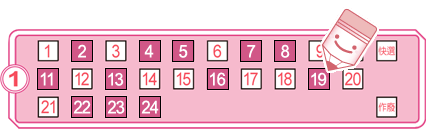
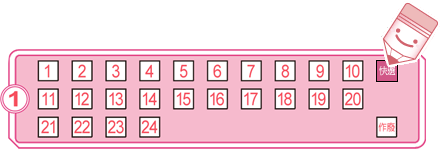
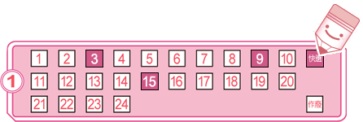
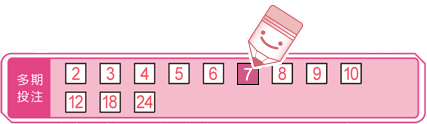

各獎項的中獎方式如下表：
| 獎項 | 中獎方式 |
| 頭獎 | 對中當期12個獎號 或 對中當期0個獎號 |
| 貳獎 | 對中當期任11個獎號 或 對中任1個獎號 |
| 參獎 | 對中當期任10個獎號 或 對中任2個獎號 |
| 肆獎 | 對中當期任9個獎號 或 對中任3個獎號 |
獎項 |
頭獎 |
貳獎 |
參獎 |
肆獎 |
單注獎金 |
$15,000,000 |
$100,000 |
$500 |
$100 |
| 註： | 頭獎至肆獎皆採固定獎金之方式分配之，惟：
|
在選號區中，自行從01~24的號碼中填選12個號碼進行投注。

在選號區中，劃記「快選」，投注機將隨機產生一組12個號碼。

您也可以在選號區中選擇1~11個號碼，並劃記「快選」，投注機將隨機為你選出剩下的號碼，產生一組12個號碼。
以下圖為例，如果您只選擇3、9、15等3個號碼，並劃記「快選」，剩下的9個號碼將由投注機隨機快選產生。

您可以在選號區中選擇13~17個號碼進行投注，系統將就選號單上的選號排列出所有可能的號碼組合。
例如您選擇用01、02、03、04、05、06、07、08、09、10、11、12、13等13個號碼進行投注，則投注機所排列出的所有號碼組合將為：
第一注：01、02、03、04、05、06、07、08、09、10、11、12
第二注：01、02、03、04、05、06、07、08、09、10、11、13
第三注：01、02、03、04、05、06、07、08、09、10、12、13
第四注：01、02、03、04、05、06、07、08、09、11、12、13
第五注：01、02、03、04、05、06、07、08、10、11、12、13
第六注：01、02、03、04、05、06、07、09、10、11、12、13
第七注：01、02、03、04、05、06、08、09、10、11、12、13
第八注：01、02、03、04、05、07、08、09、10、11、12、13
第九注：01、02、03、04、06、07、08、09、10、11、12、13
第十注：01、02、03、05、06、07、08、09、10、11、12、13
第十一注：01、02、04、05、06、07、08、09、10、11、12、13
第十二注：01、03、04、05、06、07、08、09、10、11、12、13
第十三注：02、03、04、05、06、07、08、09、10、11、12、13
系統組合所產生的總注數和總投注金額將因您所選擇的號碼數量而異。請參見下表：
|
您可以在選號區中選擇11個號碼進行投注，系統將就您的選號和剩下的13個號碼，自動進行配對，組合出13注選號。如果您選擇用01、02、03、04、05、06、07、08、09、10、11等11個號碼進行投注，則投注機所排列出的所有號碼組合將為：
第一注：01、02、03、04、05、06、07、08、09、10、11、12
第二注：01、02、03、04、05、06、07、08、09、10、11、13
第三注：01、02、03、04、05、06、07、08、09、10、11、14
：
：
第十二注：01、02、03、04、05、06、07、08、09、10、11、23
第十三注：01、02、03、04、05、06、07、08、09、10、11、24
* 注意，每次系統配號將固定產生13注，投注金額固定為新臺幣650元。
您可以選擇就您的投注內容連續投注2~24期（含當期），您的投注號碼在您所選擇的期數內皆可對獎，惟在多期投注期間不得中途要求退/換彩券；如您在多期投注期間內對中任一期的獎項，可直接至任一投注站或中國信託商業銀行(股)公司指定兌獎處兌獎，不需等到最後一期開獎結束。兌獎時，投注站或中國信託商業銀行(股)公司指定兌獎處將回收您的彩券，並同時列印一張「交換票」給您，供您在剩餘的有效期數內對獎。

注意事項：彩券銷售後如遇有加開期數之情況，預購及多期投注之期數將順延。若彩券上的資料和電腦紀錄的資料不同，以電腦紀錄資料為準。